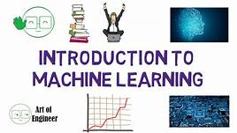
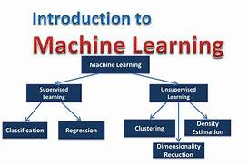
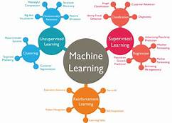
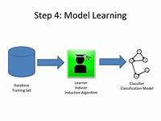

What is Machine Learning?
Arthur Samuel described it as: "the field of study that gives computers
the ability to learn without being explicitly programmed.”
•Tom Mitchell provides a more modern definition: "A computer
program is said to learn from experience E with respect to some class
of tasks T and performance measure P, if its performance at tasks in T,
as measured by P, improves with experience E."

Unsupervised learning allows us to approach problems with little or
no idea what our results should look like. We can derive structure
from data where we don't necessarily know the effect of the
variables.
We can derive this structure by clustering the data based on
relationships among the variables in the data.
With unsupervised learning there is no feedback based on the
prediction results.



Clustering:
Take a collection of 1,000,000 different genes, and find a way to
automatically group these genes into groups that are somehow similar
or related by different variables, such as lifespan, location, roles, and
so on.
Non-clustering:
The "Cocktail Party Algorithm", allows you to find structure in a chaotic
environment. (i.e. identifying individual voices and music from a mesh
of sounds at a cocktail party.)